Photo

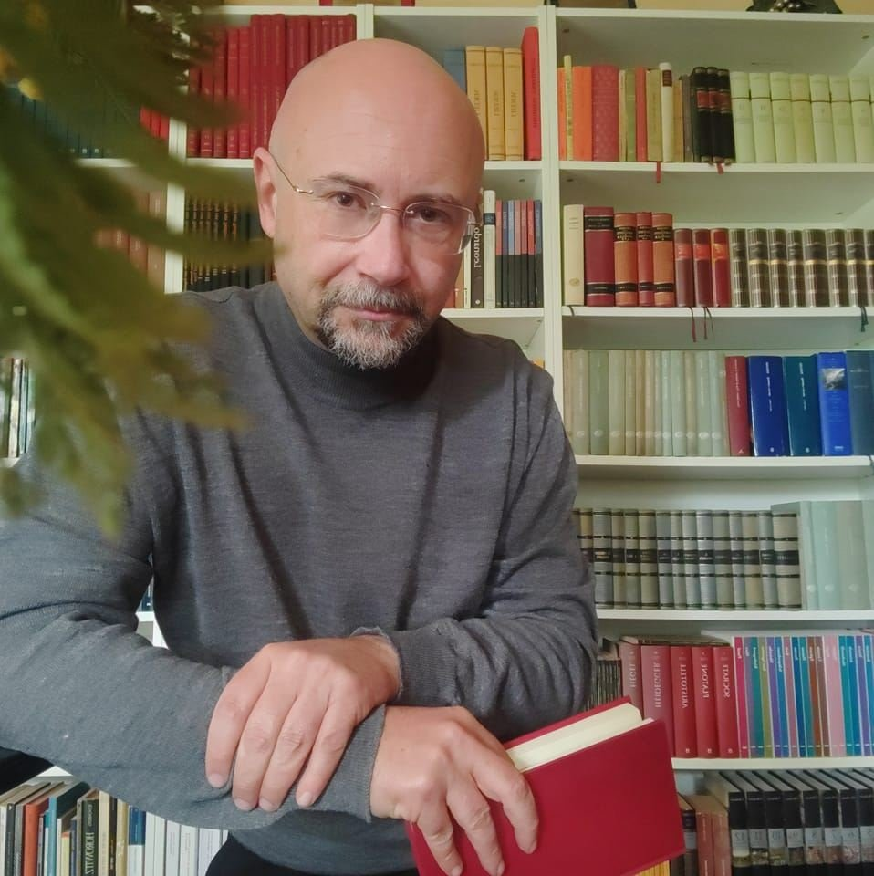

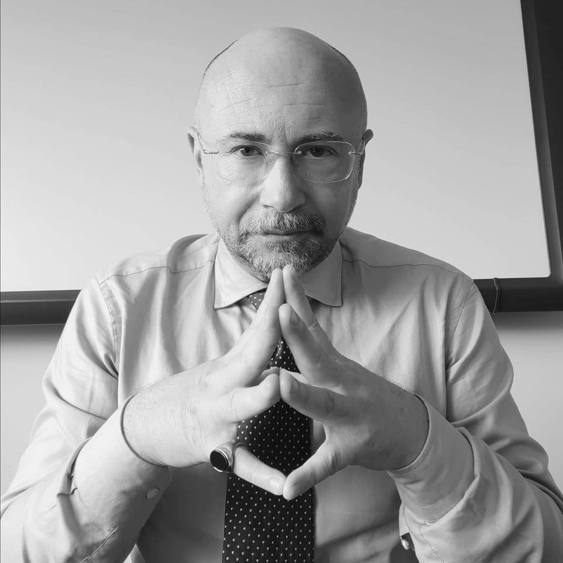

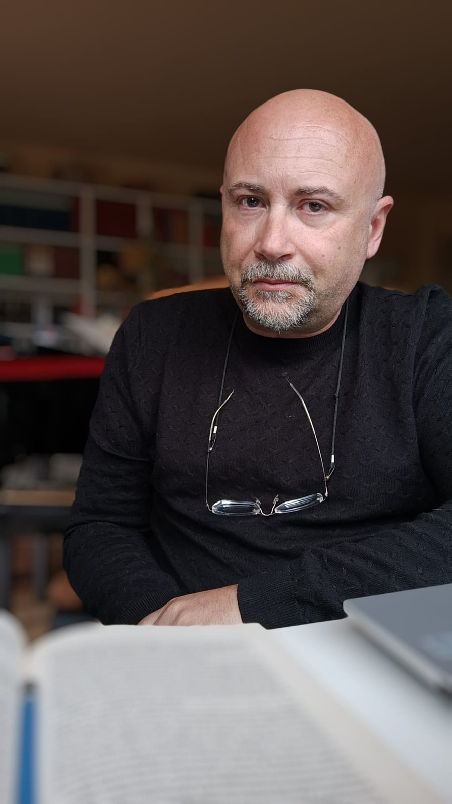

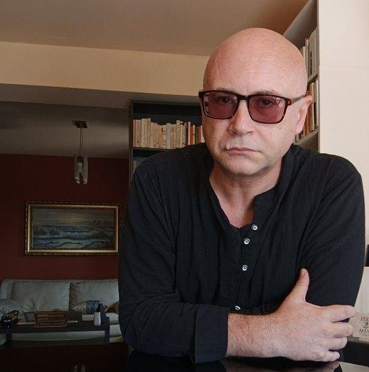

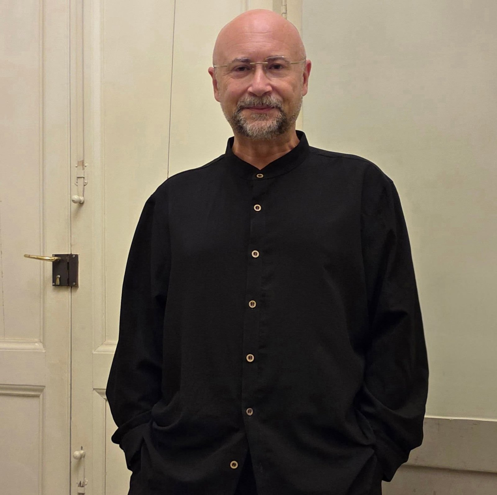

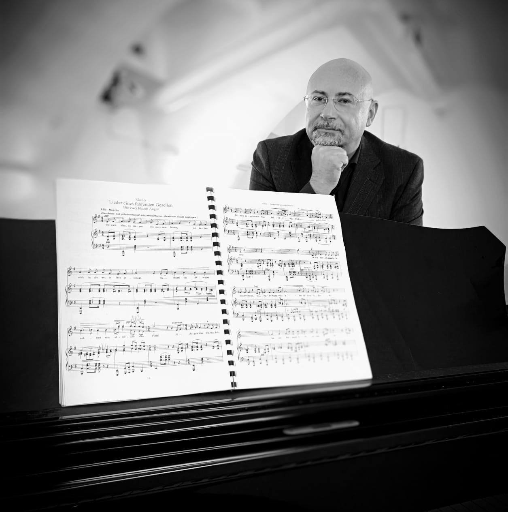

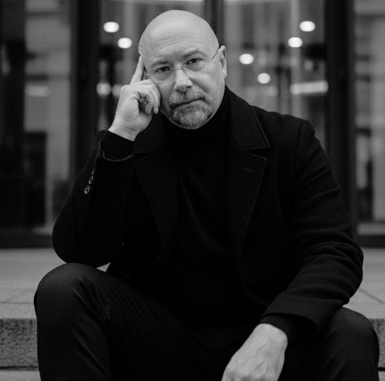

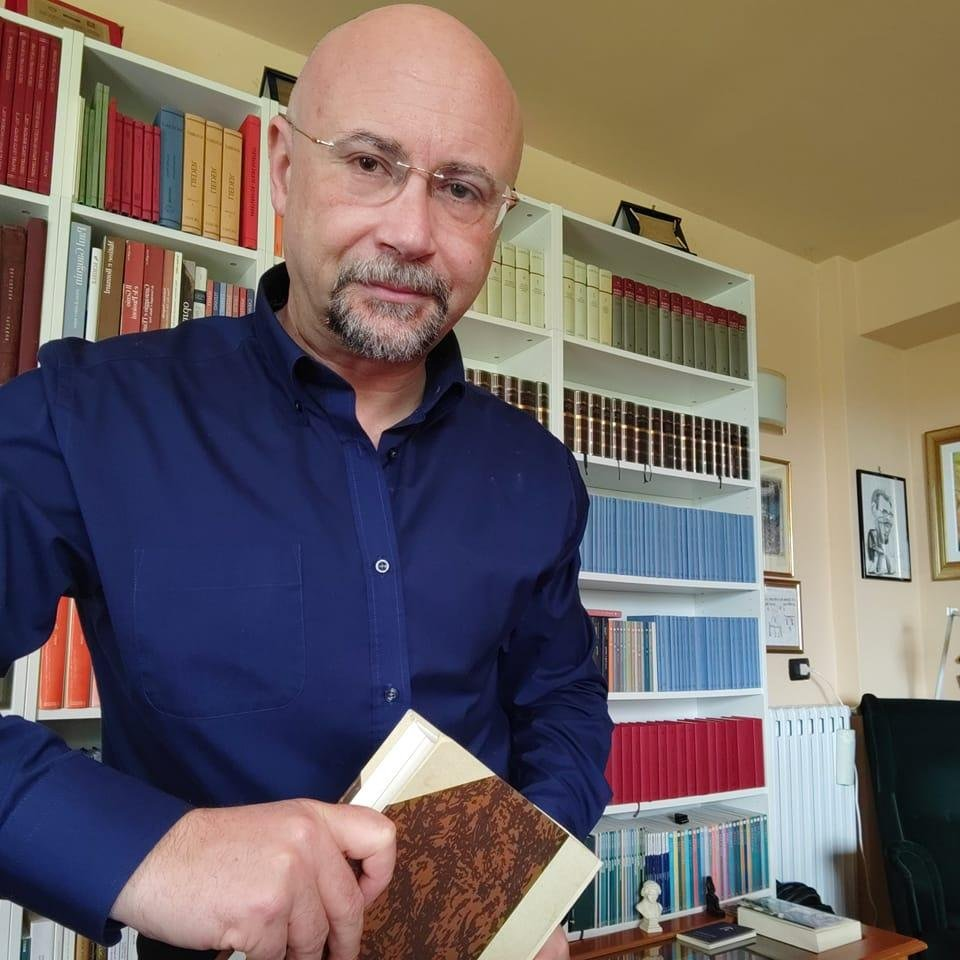

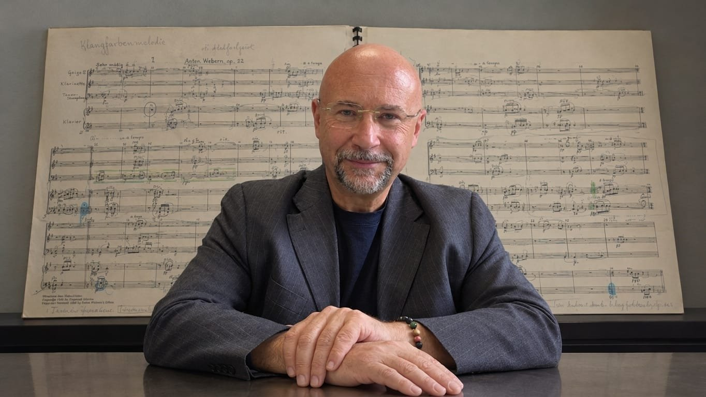

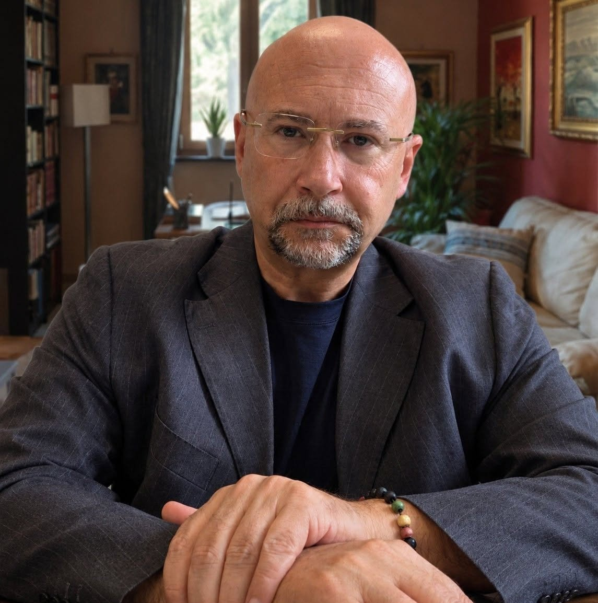

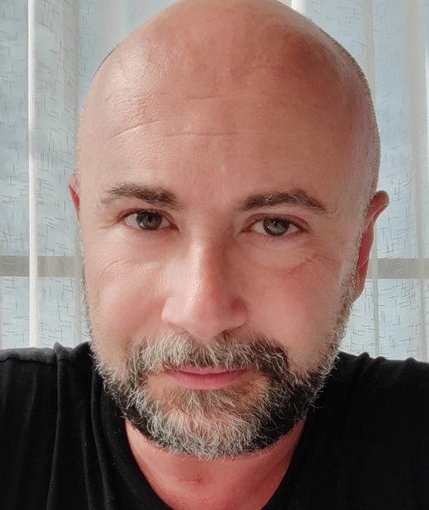

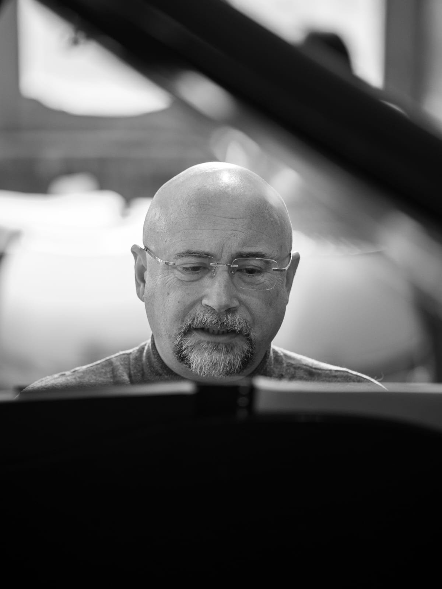
Nato ad Avellino nel 1972, Gianluca Di Donato è allievo di Aldo Ciccolini e tiene concerti in tutta Europa dal 1991. Riconosciuto come uno dei principali interpreti italiani di Franz Schubert, è stato il primo pianista italiano ad eseguire dal vivo l'integrale della produzione pianistica del compositore viennese. Laureato in Lettere Moderne e Filosofia presso l'Università di Salerno, ha conseguito anche la laurea in Musicologia alla Sapienza di Roma e la specializzazione in sostegno didattico all'Università di Foggia. Nel corso della sua carriera ha ricevuto diversi riconoscimenti per la sua attività di concertista e musicologo.
Dal 2013 al 2016 ha realizzato il Progetto Mozart, eseguendo l'integrale della produzione per e con pianoforte del salisburghese, attività che gli è valsa il Premio Sublimitas nel 2013. Dal 2015 al 2017 ha eseguito, per la seconda volta, il ciclo integrale delle sonate per pianoforte di Schubert, per GOG di Genova, Amici della Musica di Ferrara, Ravello Concert Society, e Concerti Unitus di Viterbo.
La sua attività saggistica comprende Addio al piano – Gli ultimi quattro cicli pianistici di Johannes Brahms (2019), Il riscatto del genio – Mozart nel 1784 (2020) e Johannes Kreisler Junior – Amori e amicizie del giovane Brahms (Florestano, 2022). Nel 2023 ha contribuito al volume Discorsi sulla bellezza con il saggio Il concetto di bello nella storia della musica. Nel 2020 ha fatto parte dello staff scientifico di lvbeethoven.it e dal 2022 al 2023 è stato redattore del sito di musicologia Quinte Parallele. Tra il 2021 e il 2023 ha ideato e condotto la rubrica Lezioni di musica su Radio Mozart Italia.
Tra il maggio 2022 e il novembre 2024 ha eseguito in prima mondiale a Trapani e Calatafimi, per la MEMA, l'integrale delle Sinfonie di Schubert nella trascrizione per pianoforte di Jan Brandts Buys, revisionata dallo stesso Di Donato.
Per la Florestano Edizioni ha scritto una trilogia dedicata alla liederistica con pianoforte della Seconda Scuola di Vienna, il cui terzo volume, su Alban Berg, uscirà nel gennaio 2027. Di questo repertorio ha intrapreso dal febbraio 2026, per la Società del Quartetto di Bergamo, l'esecuzione integrale, la prima in Italia, insieme al soprano Barbara Costa, con la quale forma il duo DAS LIED. In duo ha tenuto concerti a Milano, Torino, Roma, Genova e Vienna (Musikverein, 23 novembre 2026). Nel maggio 2026 è uscito il suo primo libro di narrativa, sempre per la Florestano, Kinderszenen. Lontano ma non troppo. Ha inciso per la Stradivarius il primo cd dell'integrale della liederistica di Alban Berg. Parallelamente svolge un'intensa attività come musicologo che lo porta a tenere conferenze e relazioni in contesti prestigiosi, come il Festival Luigi Nono, Il Saggiatore musicale di Bologna, la Fondazione Besso e Arthemisia.
Dal 2027 sarà consulente scientifico, per la musicologia, presso il Dipartimento di Filosofia, Sociologia, Pedagogia e Psicologia Applicata (FISPPA) dell'Università degli Studi di Padova per l'Unità di Progetto CISSE, Centro Studi Interdisciplinare sugli Stati Emotivi.
Lecture: L'utopia del Wanderer. Fragment, silence and listening in Luigi Nono's music
Presentazione Libro e Concerto Duo DAS LIED (Barbara Costa, soprano)
Presentazione del libro: La liederistica con pianoforte della seconda scuola di Vienna, Vol. 2. Anton Webern (Florestano Edizioni)
Programma: Schönberg (Lieder op. 1), Wagner (Wesendonck Lieder), Brahms (Klavierstücke op. 119), Berg (Sieben frühe Lieder)
Lecture: Due occhi, due epoche. Alban Berg and the Lied Schliesse mir die Augen beide
Presentazione Libro e Concerto Duo DAS LIED (Barbara Costa, soprano)
Presentazione del libro: La liederistica con pianoforte della seconda scuola di Vienna, Vol. 2. Anton Webern (Florestano Edizioni)
Programma: Schönberg (Lieder op. 1), Webern (Lieder op. 3), Berg (Sonata op. 1), Berg (Sieben frühe Lieder)
Presentazione Libro e Concerto Duo DAS LIED (Barbara Costa, soprano)
Presentazione del libro: La liederistica con pianoforte della seconda scuola di Vienna, Vol. 1, Schönberg (Florestano Edizioni)
Programma: Schönberg (Lieder op. 1), Wagner (Wesendonck Lieder), Brahms (Fantasien op. 116), Berg (Sieben frühe Lieder)
Presentazione Libro e Concerto Duo DAS LIED (Barbara Costa, soprano)
Presentazione del libro: La liederistica con pianoforte della seconda scuola di Vienna, Vol. 2. Anton Webern (Florestano Edizioni)
Programma: Schönberg (Lieder op. 1), Webern (Lieder op. 3), Brahms (Fantasien op. 116), Berg (Sieben frühe Lieder)
Concerto Duo DAS LIED (Barbara Costa, soprano)
Complete Lieder with piano of the Second Viennese School (1st concert)
Programma: Schönberg (Lieder op. 1), Webern (Lieder op. 3), Brahms (Fantasien op. 116), Berg (Sieben frühe Lieder)
Presentazione Libro e Lecture
Presentazione del libro: La liederistica con pianoforte della seconda scuola di Vienna. Vol. 1 - Arnold Schönberg (Florestano Edizioni)
Lecture: The evolution of the Lied from Schubert to Webern (Part One)
Recital Pianistico: IL MONDO DI IERI
Programma: Berg (Sonata op. 1), Schubert/Buys (Symphony No. 8 D.759), Brahms (Klavierstücke op. 119)
Recital Pianistico: Complete Schubert Symphonies (Buys transcription - World Premiere - 4th concert)
Programma: Symphony No. 8 D. 759, Symphony No. 9 D. 944 "The Great"
Presentazione Libro e Concerto Duo DAS LIED (Barbara Costa, soprano)
Presentazione del libro: La liederistica con pianoforte della seconda scuola di Vienna, Vol. 2. Anton Webern (Florestano Edizioni)
Programma: Webern (Eight Early Songs), Wagner (Wesendonck Lieder), Brahms (Klavierstücke op. 119), Berg (Sieben frühe Lieder)
Conferenza: Seconda Scuola di Vienna e arti visive - Tre conferenze su procedure formali comparate
Titolo: "Suono interiore e necessità spirituale. Kandinskij e Schönberg"
Presentazione Libro e Recital
Presentazione del libro: La liederistica con pianoforte della seconda scuola di Vienna, Vol. 2. Anton Webern (Florestano Edizioni)
Programma: A. Berg (Sonata op. 1), A. Webern (Kinderstücke 1924, Klavierstücke 1926), J. Brahms (Klavierstücke op. 119)
Concerto Duo DAS LIED (Barbara Costa, soprano)
Programma: Alban Berg (Jugendlieder I, Piano Sonata op. 1, Sieben Frühe Lieder)
Conferenza: Seconda Scuola di Vienna e arti visive - Tre conferenze su procedure formali comparate
Titolo: "Corpo, ferita, controllo. Egon Schiele e Alban Berg"
Conferenza: Seconda Scuola di Vienna e arti visive - Tre conferenze su procedure formali comparate
Titolo: "La semantica artistica. Paul Klee e Anton Webern"
Registrazione Album (Barbara Costa, soprano): Recording Alban Berg Lieder I vol.
Programma: Jugendlieder I, Piano Sonata op. 1, Vier Lieder op. 2
Duo con Simone Randazzo (clarinetto)
Programma: R. Schumann (Phantasiestücke op. 73), J. Sibelius (Piano pieces op. 75 e 76 - selezione), F. Poulenc (Clarinet Sonata)
Conferenza: Responsabilità dell'ascolto. Musica e Filosofia del Novecento
Bloch, Adorno, Nono, Bespaloff
Relatore: Una sola volta, e per sempre. Il Manifesto del 1860 come crocevia biografico, estetico e politico nel giovane Brahms
Concerto Duo DAS LIED (Barbara Costa, soprano)
Programma: J. Brahms (Intermezzi op. 117), A. Schönberg (Gesänge op. 1), A. Berg (Piano sonata op. 1, Vier Lieder op. 2), A. Webern (George Lieder op. 3), J. Brahms (Klavierstücke op. 119), A. Berg (Sieben frühe Lieder)
Locandina e programma ↗
Conferenza: Suono interiore e necessità spirituale
Kandinskij e Schönberg fra visione, forma e frattura
Presentazione CD e Concerto Duo DAS LIED (Barbara Costa, soprano)
Presentazione del CD: Alban Berg – Sämtliche Lieder Vol. 1 (Stradivarius)
Programma: Musiche di Brahms, Beethoven, Schönberg, Berg e Wagner
Concerto Duo DAS LIED (Barbara Costa, soprano)
Integrale della Liederistica con pianoforte della Seconda Scuola di Vienna
Programma: Brahms (Rapsodien op. 79), Schönberg (Vier Lieder op. 2), Webern (Drei Gedichte), Webern (Fünf Lieder op. 4), Brahms (Klavierstücke op. 119), Berg (Jugendlieder I)
Presentazione della trilogia La liederistica con pianoforte della seconda scuola di Vienna (Florestano Edizioni)
Recital pianistico
Programma: L. van Beethoven, le ultime tre sonate per pianoforte (op. 109, op. 110, op. 111)
Presentazione della trilogia La liederistica con pianoforte della seconda scuola di Vienna (Florestano Edizioni)
Conferenza: Suono interiore e necessità spirituale. Kandinskij e Schönberg
Ciclo «Seconda Scuola di Vienna e arti visive. Tre conferenze su procedure formali comparate», primo incontro
Presentazione della trilogia La liederistica con pianoforte della seconda scuola di Vienna (Florestano Edizioni)
Conferenza: Corpo, ferita, controllo. Egon Schiele e Alban Berg
Ciclo «Seconda Scuola di Vienna e arti visive. Tre conferenze su procedure formali comparate», secondo incontro
Presentazione della trilogia La liederistica con pianoforte della seconda scuola di Vienna (Florestano Edizioni)
Conferenza: Corpo, ferita, controllo
Egon Schiele e Alban Berg
Conferenza: La semantica artistica. Paul Klee e Anton Webern
Ciclo «Seconda Scuola di Vienna e arti visive. Tre conferenze su procedure formali comparate», terzo incontro
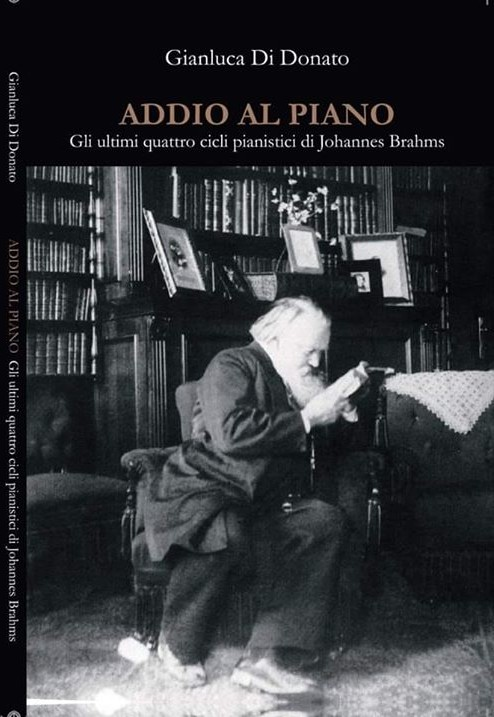
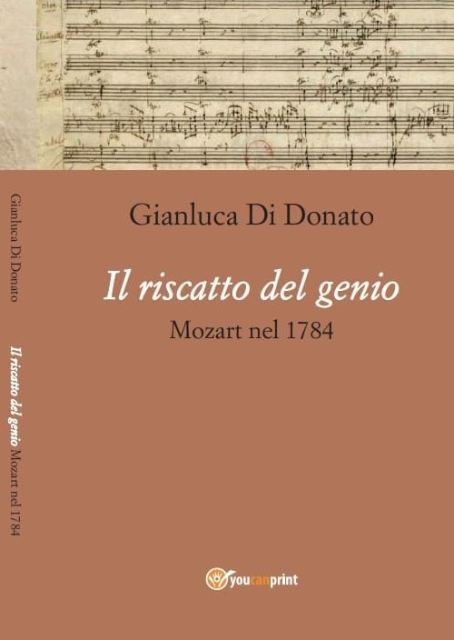
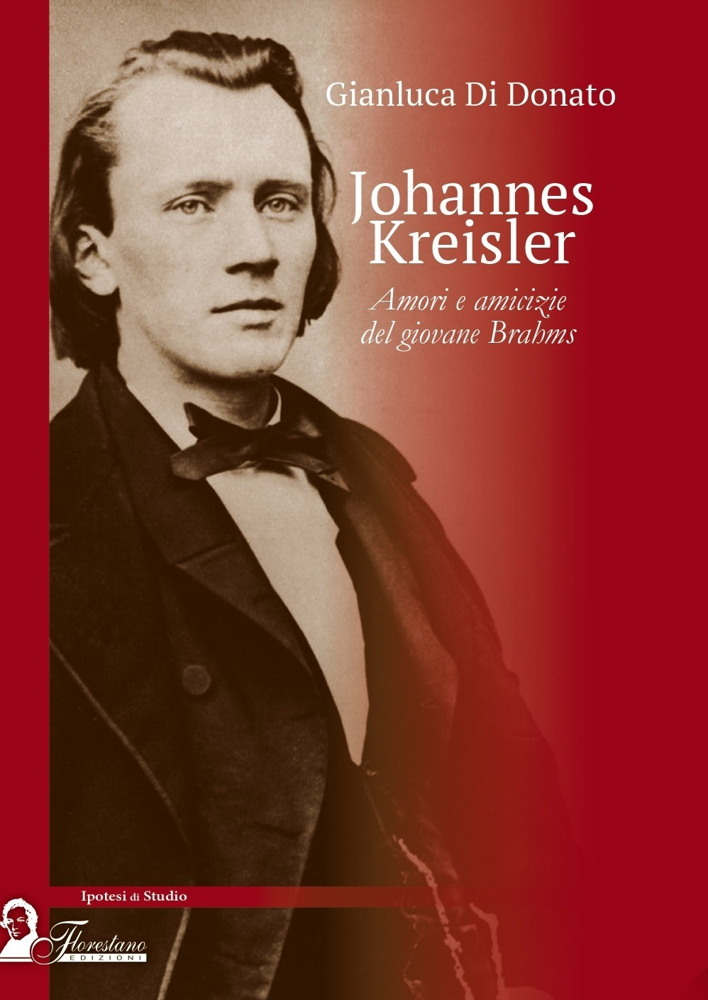
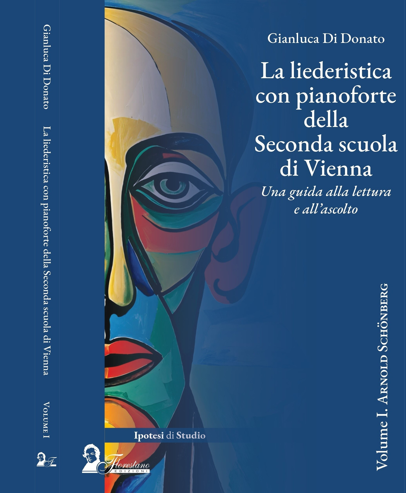
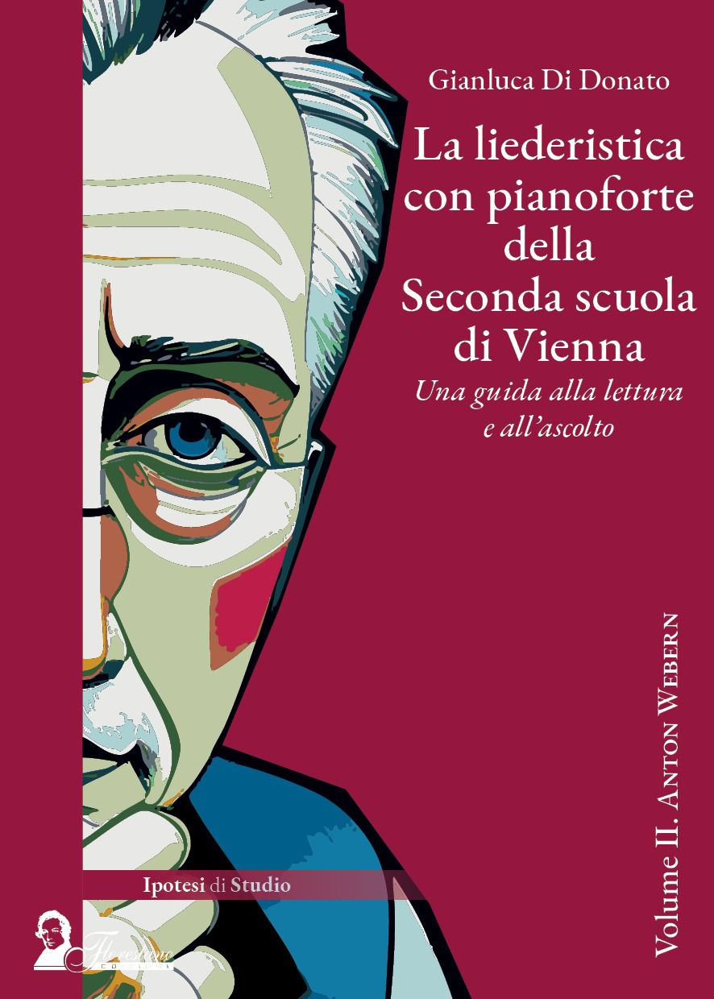
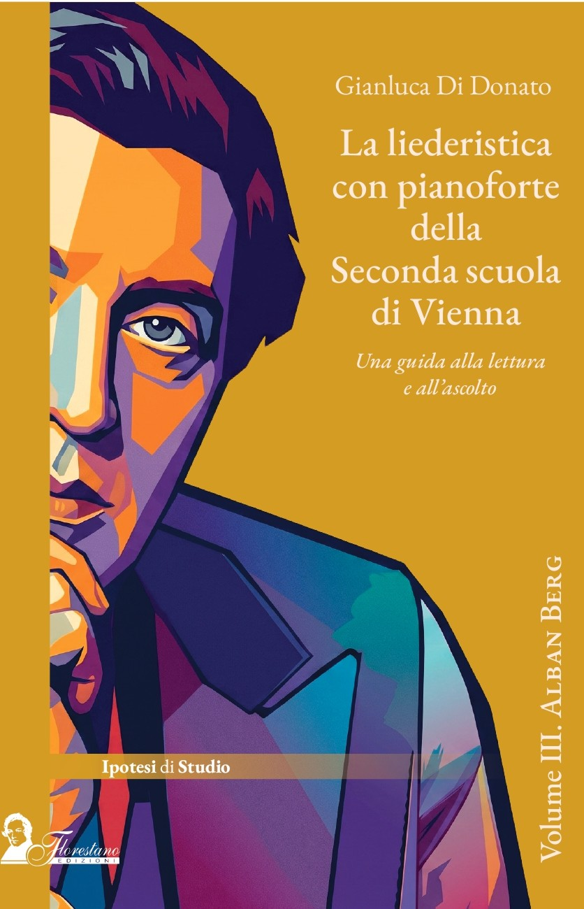
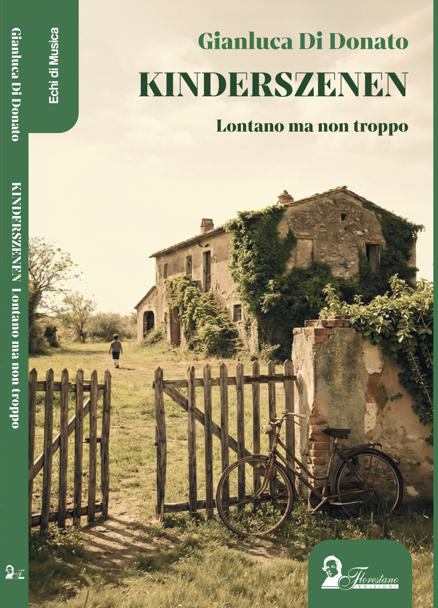
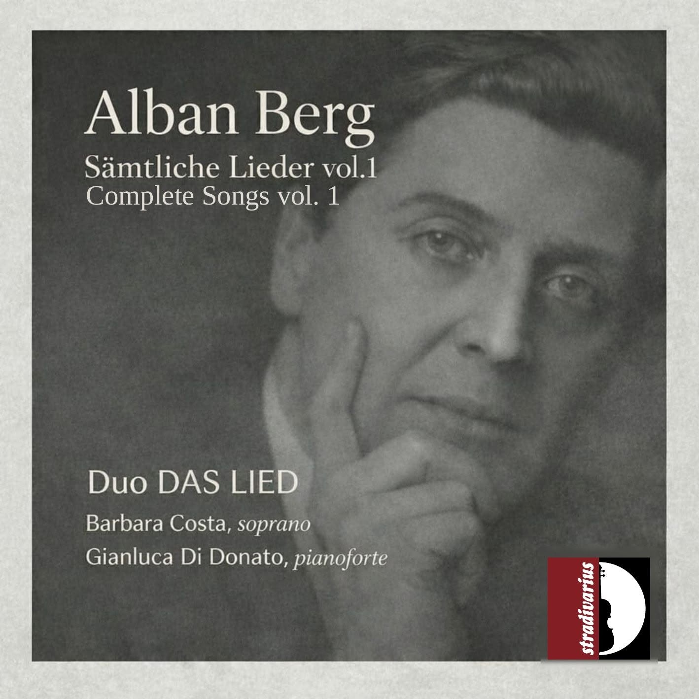
Duo DAS LIED (Barbara Costa soprano, Gianluca Di Donato pianoforte)
Sonate op. 109, 110, 111, registrazioni dal vivo. Gianluca Di Donato, pianoforte











